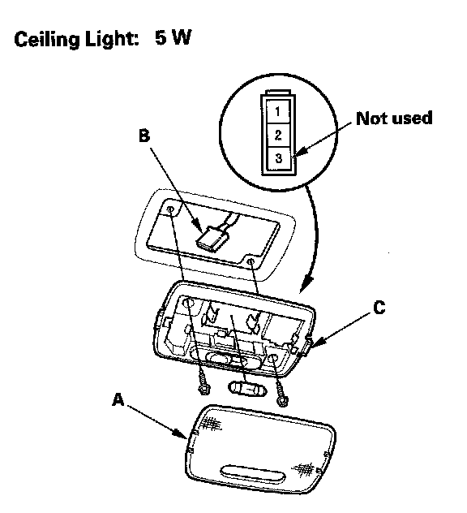

Dome Lamp: Service and Repair
Ceiling Light Test/Replacement1. Turn the ceiling light switch OFF.

2. Carefully pry the lens (A) off with a small screwdriver.
3. Remove the screws, then remove the ceiling light (B).
4. Disconnect the 3P connector (C) from the ceiling light.
5. Check for continuity between the terminals.
- There should be continuity between the No.1 and No.2 terminals with the switch in the MIDDLE position.
- There should be continuity between the No.2 and No.3 (Body ground) terminals with the switch in the ON position.
- There should be no continuity between the No.1 and No.2 terminals, and between the No.2 and body ground with the switch in the OFF position.
6. If the continuity is not as specified, check the bulb. If the bulb is OK, replace the light.
7. Install in the reverse order of removal.